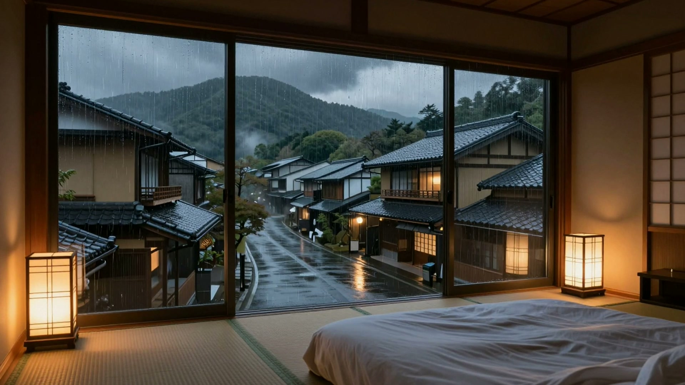
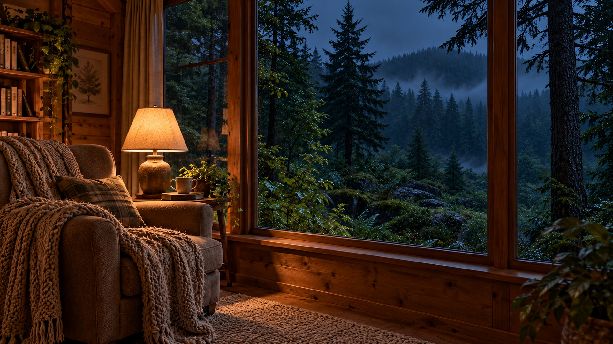

2 HOURSRain beyond a quiet Japanese room
Gentle rain accompanies a sheltered view across a Japanese-inspired village. A warm interior frames the wet rooftops and distant hills, with no music or narration.
Explore this ambienceGentle rain. Places to get lost in.
Unhurried soundscapes for a book, a quiet task, or simply doing less.

A window into the rain.
Three different settings.
Choose a small change of atmosphere.

2 HOURSGentle rain accompanies a sheltered view across a Japanese-inspired village. A warm interior frames the wet rooftops and distant hills, with no music or narration.
Explore this ambienceA comfortable armchair and warm lamplight look out onto a rainy forest. Two hours of gentle rain, without music, narration or intentionally added thunder.
Explore this ambience 2 HOURS
2 HOURSAn outdoor woodland view with soft rainfall on leaves and damp ground. A fixed path through moss and ferns accompanies two hours of forest rain, without music or narration.
Explore this ambienceNo matching setting yet. Try another word or choose All settings.
These are imagined settings, created with AI tools and assembled into rain ambiences. They are not field recordings or travel footage. We share that distinction because a quiet experience should also be an honest one.
How these ambiences are made ↗“A little background.
A little breathing room.”
Start at a comfortable volume. No account on this site, no download, and no promise of better sleep or productivity. Just a setting you can choose to spend time with.